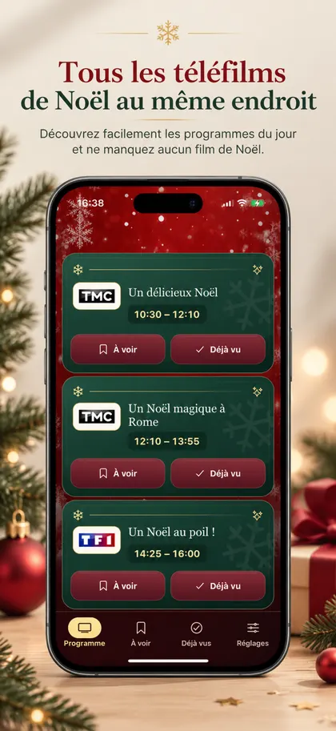
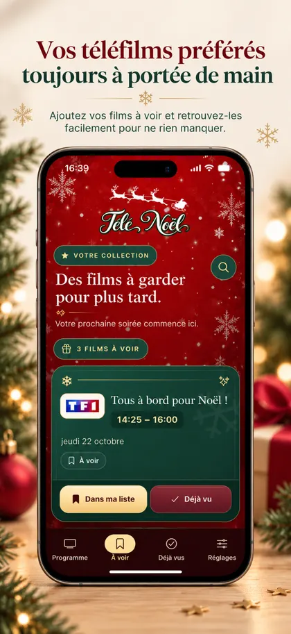
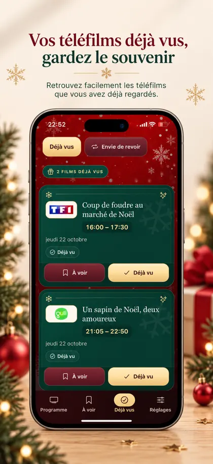
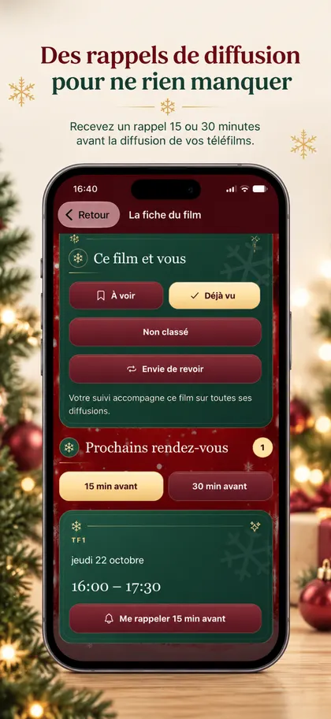
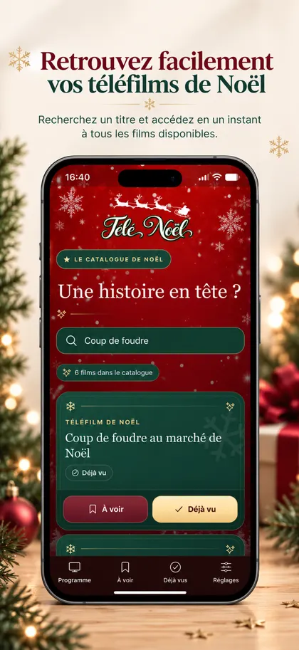

— l’application des téléfilms de Noël
— l’application des téléfilms de Noël
Les belles histoires reviennent
Toute la magie des téléfilms de Noël dans votre poche.
Le programme TV des téléfilms de Noël, jour après jour : chaînes, horaires, prochaines diffusions et rappels pour ne rien manquer. Préparez vos soirées, gardez vos coups de cœur et retrouvez les histoires déjà vues.

Gratuite · iPhone et Android · sans compte à créer

La magie de Noël approche…
Rendez-vous le 25 décembre, devant vos plus belles histoires.
Chaque jour un peu plus de magie
Disponible aujourd’hui
Le programme des téléfilms de Noël, en un clin d’œil.
Tout ce qu’il faut pour choisir votre prochain film, ne jamais le manquer et garder le souvenir de ceux qui vous ont fait fondre.
Les diffusions du jour
Ouvrez l’application : les téléfilms de Noël programmés aujourd’hui vous attendent, avec leur chaîne et leur horaire.
Les prochains jours
Parcourez le calendrier des téléfilms de Noël sur plusieurs jours pour organiser vos soirées à l’avance.
Horaires et chaînes
Chaque diffusion indique son heure de début et de fin et la chaîne qui la propose, selon les horaires annoncés.
Recherche de téléfilms
Un titre en tête ? Retrouvez-le en quelques lettres dans le catalogue de la saison.
Vos chaînes favorites
Choisissez vos chaînes dans les réglages et n’affichez que leurs programmes si vous le souhaitez.
À voir, Déjà vus, Envie de revoir
Mettez de côté vos prochaines découvertes et gardez le fil des histoires déjà vues… ou à savourer encore.
Rappels avant diffusion
Une notification 15 ou 30 minutes avant le début, le temps de préparer le chocolat chaud.
Hors ligne
Le dernier programme téléchargé reste consultable sans connexion, tout comme vos listes.
Sans Pub, si vous le souhaitez
L’application est gratuite. Un achat unique, sans abonnement, masque les bannières publicitaires.
En préparation · version 1.1
Bientôt dans TéléNoël.
La prochaine version est en cours de finalisation. Ces nouveautés ne sont pas encore disponibles dans la version actuelle des boutiques ; elles arriveront avec la mise à jour, une fois celle-ci validée par Apple et Google.
- Bientôt
Badges « Inédit » et « Nouveauté »
Repérez les premières diffusions annoncées par le guide TV, avec un filtre dédié, et les téléfilms récemment arrivés au programme.
- Bientôt
« En cours » et compte à rebours
Un badge et une barre de progression pour les films en cours, un compte à rebours avant les suivants : des estimations fondées sur les horaires annoncés.
- Bientôt
L’histoire, en quelques lignes
Pour certains films, un court résumé en français rédigé à partir de sources libres comme Wikipédia, avec ses références. Tous les films n’en auront pas.
- Bientôt
Bandes-annonces sur YouTube
Quand une bande-annonce officielle existe, un bouton l’ouvre sur YouTube, souvent en version originale.
- Bientôt
Partager un téléfilm
Envoyez à vos proches le titre, la chaîne et l’horaire d’une diffusion depuis la feuille de partage de votre téléphone.
- Bientôt
Le compteur avant Noël
Le décompte des jours jusqu’au 25 décembre, directement dans l’application.
- Bientôt
Des fiches plus riches
De nouvelles illustrations hivernales et un catalogue enrichi automatiquement au fil de la saison.
Aperçu de l’application
Un petit air de Noël à chaque écran.
Captures de TéléNoël 1.0, telles que présentées sur l’App Store.




Télévision gratuite
Les chaînes suivies par TéléNoël.
TéléNoël recense les téléfilms de Noël programmés sur ces chaînes de la TNT. La couverture peut varier selon les jours et les données disponibles.
- TF1
- TMC
- M6
- W9
- TFX
- TF1 Séries Films
- 6ter
- Gulli
- RMC Life
- CSTAR avec la version 1.1
TéléNoël est un guide indépendant : il n’est ni affilié à ces chaînes, ni approuvé ou sponsorisé par elles. Les noms des chaînes sont cités uniquement pour indiquer où passent les films.
Pour les amoureux de Noël
Pourquoi choisir TéléNoël ?
Parce que la saison des téléfilms de Noël mérite mieux qu’une grille TV parcourue à la hâte. TéléNoël a été imaginée pour celles et ceux qui attendent chaque année ces belles histoires, un plaid sur les genoux.
Tous les téléfilms de Noël au même endroit
Plus besoin de jongler entre les programmes des chaînes.
Ne plus manquer une diffusion
Un rappel au bon moment, et la soirée est sauvée.
Préparer ses soirées de Noël
Repérez à l’avance les films des prochains jours.
Garder le souvenir des films vus
Vos listes restent sur votre téléphone, sans compte à créer.
Découvrir de nouvelles histoires
Le catalogue s’étoffe au fil de la saison, au rythme des programmes.
Une interface pensée pour Noël
Velours rouge, sapins, guirlandes et lumières dorées : l’ambiance des fêtes à chaque ouverture.
Questions fréquentes
Tout savoir sur TéléNoël.
TéléNoël est-elle gratuite ?
Oui. TéléNoël se télécharge et s’utilise gratuitement ; elle est financée par des bannières publicitaires. Un achat unique facultatif, « Sans Pub », masque ces bannières. Ce n’est pas un abonnement : vous ne payez qu’une fois, au prix affiché par l’App Store ou Google Play avant validation.
Sur quels appareils puis-je installer TéléNoël ?
Sur iPhone, depuis l’App Store, et sur les smartphones Android, depuis Google Play. Les versions de système compatibles sont indiquées sur chaque boutique.
Puis-je regarder les téléfilms directement dans l’application ?
Non. TéléNoël est un guide de programmes : elle vous indique quand et sur quelle chaîne passent les téléfilms de Noël. Elle ne diffuse aucun film, ne propose ni streaming ni replay et ne donne accès à aucun flux vidéo. Pour regarder un film, rendez-vous sur la chaîne concernée à l’heure annoncée.
Quelles chaînes sont disponibles ?
TF1, TMC, M6, W9, TFX, TF1 Séries Films, 6ter, Gulli et RMC Life ; CSTAR rejoint la liste avec la version 1.1. Seuls les téléfilms de Noël programmés sur ces chaînes apparaissent dans l’application.
Comment les programmes sont-ils actualisés ?
Le serveur de TéléNoël récupère automatiquement les programmes plusieurs fois par jour, à partir des données du projet XML TV Fr. L’application télécharge ensuite le programme des prochains jours lorsque vous l’ouvrez avec une connexion. Les chaînes peuvent modifier leur programmation au dernier moment : en cas de doute, l’horaire de la chaîne fait foi.
Comment recevoir un rappel avant une diffusion ?
Ouvrez la fiche du film, puis choisissez un rappel 15 ou 30 minutes avant la diffusion. La première fois, votre téléphone vous demande l’autorisation d’afficher des notifications. Sur Android, l’autorisation « Alarmes et rappels » permet un rappel à l’heure exacte. Vos rappels se retrouvent aussi dans les réglages de l’application.
Pourquoi certains films n’ont-ils pas de résumé ?
Avec la version 1.1, certains films présenteront un court résumé rédigé à partir de sources libres comme Wikipédia. Lorsqu’aucune source fiable et réutilisable n’existe pour un film, aucun résumé n’est affiché plutôt que d’en inventer un.
Pourquoi certaines affiches sont-elles génériques ?
Les affiches officielles appartiennent aux producteurs et distributeurs : TéléNoël ne les affiche que lorsqu’elle a le droit de le faire. Sinon, la fiche présente une illustration hivernale originale, qui la décore sans représenter le film.
Comment supprimer les publicités ?
Dans l’onglet Réglages, rubrique « Supprimer les publicités », touchez « Acheter Sans Pub ». Le paiement est traité par l’App Store ou Google Play ; le prix est affiché par la boutique avant confirmation. Les détails figurent dans les conditions d’utilisation.
Comment restaurer mon achat ?
Après une réinstallation, ou sur un autre appareil connecté au même compte Apple ou Google, ouvrez les Réglages de TéléNoël et touchez « Restaurer mes achats ». L’achat reste lié à la boutique où il a été effectué : un achat sur l’App Store ne se transfère pas sur Android, et inversement.
Où sont conservées mes listes ?
Sur votre téléphone uniquement. TéléNoël ne demande aucun compte et n’envoie ni vos listes ni vos rappels à son serveur. Supprimer l’application efface ces données, sauf sauvegarde de votre téléphone. Tous les détails figurent dans la politique de confidentialité.
Comment signaler une erreur ?
Un horaire faux, un film mal identifié, un résumé inexact ou une bande-annonce erronée ? Écrivez à bengesland27500@gmail.com en précisant le titre du film et, si possible, la date et la chaîne. Le contenu sera vérifié, puis corrigé ou retiré.
Comment contacter le développeur ?
Par e-mail, à bengesland27500@gmail.com. TéléNoël est développée par Benjamin Gesland, développeur indépendant.
TéléNoël est-elle affiliée aux chaînes de télévision ?
Non. TéléNoël est un guide indépendant. Elle n’est affiliée ni aux chaînes, ni aux producteurs ou distributeurs des films, et n’est ni approuvée ni sponsorisée par eux. Les noms des chaînes et des films appartiennent à leurs titulaires.
Prêt à retrouver toute la magie de Noël ?
Téléchargez TéléNoël gratuitement et installez-vous : votre prochaine belle histoire vous attend.
TéléNoël est un guide de programmes : l’application ne diffuse aucune vidéo.